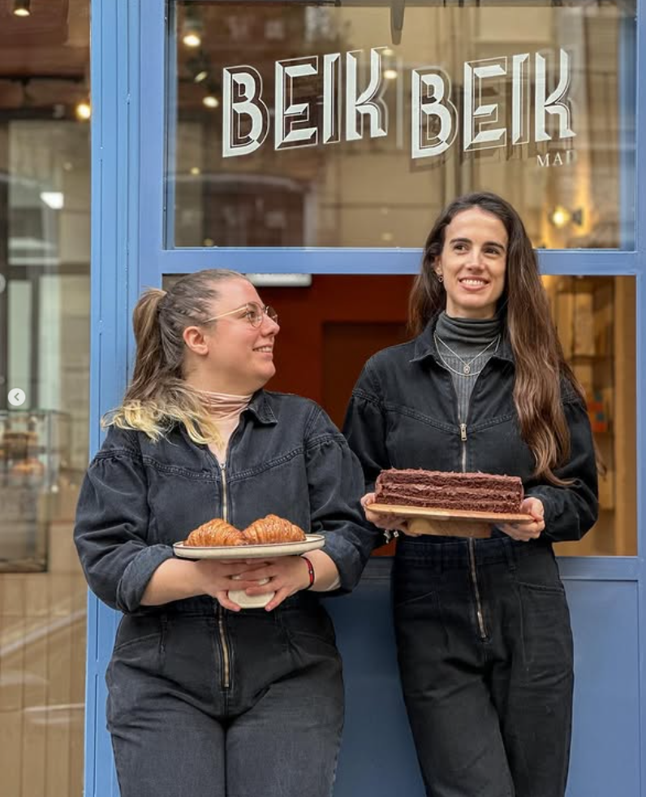
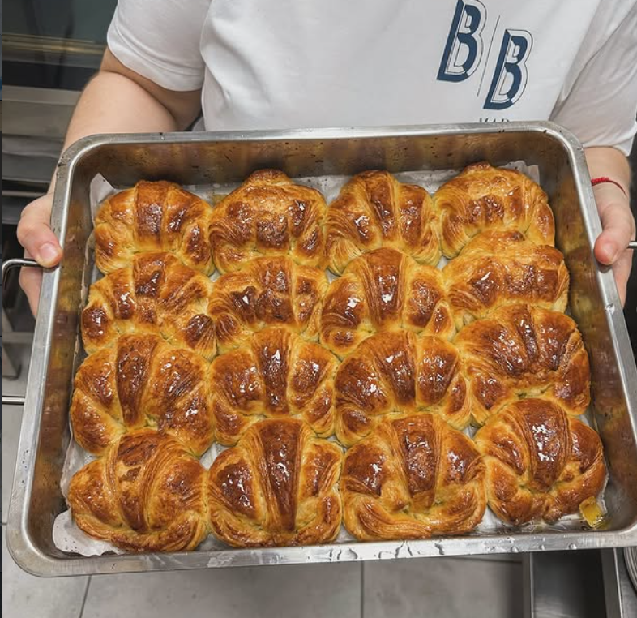
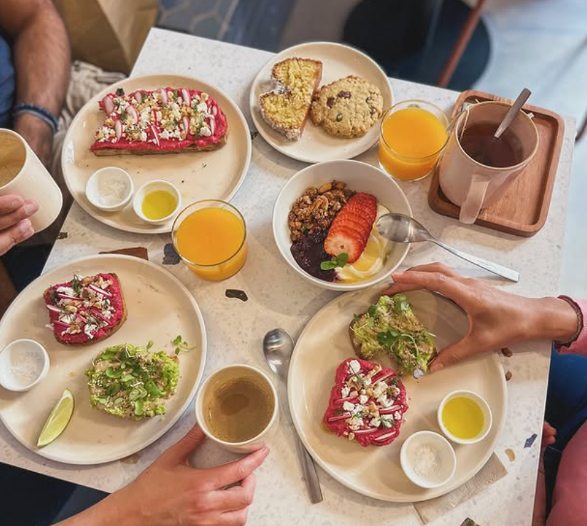

Beik Beik nació de la idea de que el brunch merece pan de verdad. No congelado, no industrial: masa madre fermentada en casa, horneada cada mañana en nuestro pequeño obrador de Chamberí. Agus y Cata se pusieron el delantal y no se lo han quitado desde entonces.
Beik Beik was born from the idea that brunch deserves real bread. Not frozen, not industrial: sourdough fermented in-house, baked every morning in our small Chamberí workshop. Agus and Cata put on their aprons and haven't taken them off since.

Lo que empezó como la cocina de un pequeño café se convirtió en un obrador artesano que suministra pastelería y panadería a otros cafés de la ciudad. Babkas, cookies de pistacho, bizcochos, pan de masa madre: si lo has probado en otro sitio, es posible que saliera de aquí.
What started as the kitchen of a small café became an artisan bakery workshop that supplies pastries and bread to other cafés across the city. Babkas, pistachio cookies, cakes, sourdough: if you've tried it somewhere else, it may have come from here.

No hacemos distinción entre desayuno, almuerzo o merienda. En Beik Beik todo es brunch, todo el día. Tostas de masa madre con productos de temporada, bowls caseros, specialty coffee y pastelería recién horneada. Ven cuando quieras, con quien quieras (y sí, tu perro también es bienvenido).
We don't draw lines between breakfast, lunch and afternoon tea. At Beik Beik everything is brunch, all day long. Sourdough toasts with seasonal ingredients, homemade bowls, specialty coffee and freshly baked pastries. Come whenever, with whoever (yes, your dog is welcome too).
Suministramos pastelería y panadería artesanal a cafés y restaurantes de Madrid. Escríbenos para conocer nuestro catálogo wholesale.
We supply artisan pastries and breads to cafés and restaurants across Madrid. Get in touch for our wholesale catalogue.
Contactar → Get in touch →“Brunch beik's me happy!”Beik Beik MAD · Chamberí